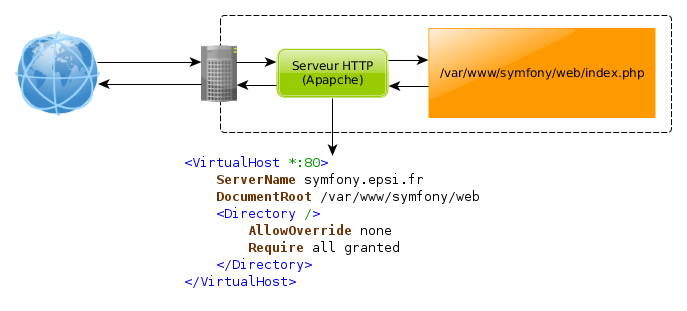

Du navigateur vers Symfony
De votre navigateur
Lorsqu’on appelle une page dans un navigateur web :
- le navigateur envoie une requête HTTP
- la requête HTTP arrive sur un serveur Web
- le serveur Web traite la requête et renvoi une réponse HTTP

Une requête HTTP contient :
- la méthode utilisée (GET, POST, PUT, DELETE, etc.)
- la page demandée
- le type de requête (HTTP/1.1 par exemple)
- des entêtes (headers)
- le contenu de la requête
Une réponse HTTP contient :
En passant par le serveur web
La requête HTTP est interceptée par le serveur HTTP qui la lit et décide de ce qui doit être fait en fonction de fichier de configuration que l’on appelle des VHosts (Virtual hosts).
Dans le cas d’une application PHP, le VHost précisera s’appeler le le contrôleur frontal de l’application. Par défaut, le contrôleur frontal s’appelle index.php.

Vers Symfony
Lorsqu’une page est appelée dans Symfony :
- Le serveur web appelle le contrôleur frontal et lui transmet la requête ;
- Le contrôleur frontal reçoit la requête, charge le Kernel et la lui transmet ;
- Le Kernel demande au Router quel contrôleur exécuter pour la page demandée ;
- Le Kernel exécute la méthode demandée du contrôleur.
- Le contrôleur retourne la réponse.